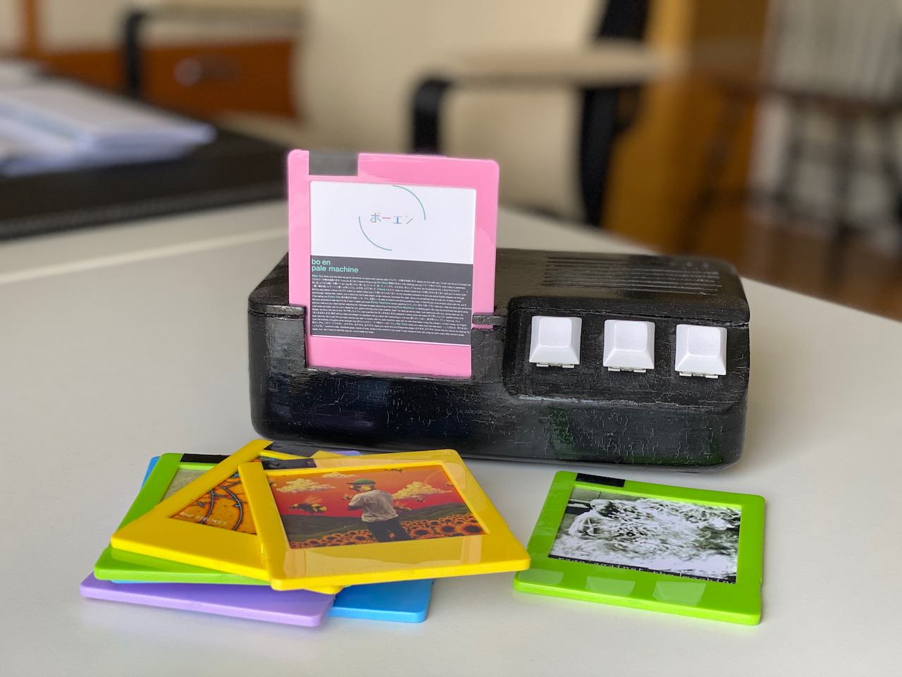
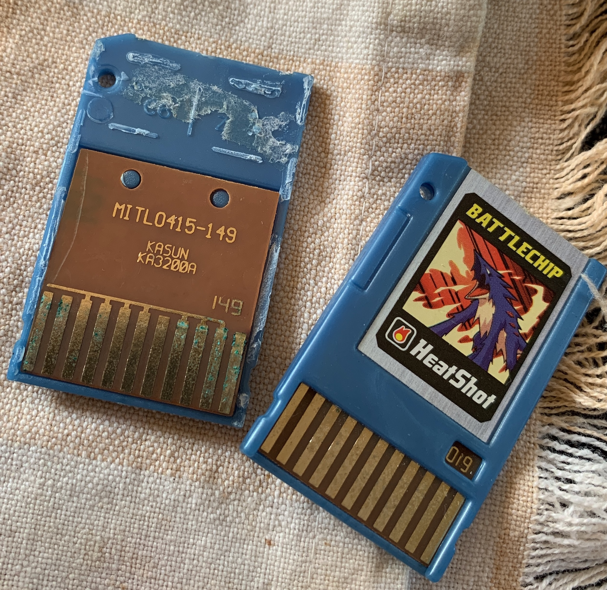

TonoSeptember 5, 2019
Update: January 3, 2024
I [finally] added a write up of version 2. I'd give you a link, but I never bothered to add anchors for the headers to my static site generator I guess! If you search for 'Tono v2' on the page it should be the first result.
I'm not a good writer in the first place and wrote it while very sick and sleep deprived, so I don't blame you if you just wanna look at the pretty pictures on the gallery page.
Tono is basically just a record player which takes cartridges instead of vinyl. In the age of streaming services making it easy to quickly put music on without thinking, I wanted a device that could mimic the deliberate ritual that comes with a record player, without the associated price. (I'm sure if I add up all the money I sunk into developing this thing, I probably aggressively missed that goal.)
Tono v1
Pictured above is the original Tono. I started it conceptualizing it some time in December 2017, and finalized it late March of the following year.
Compared to the current version, this was exceptionally quick development time. I just got a raspberry pi 2B, a HifiBerry DAC+ Pro and got to work making it play music.
At this point I had no idea what I was doing and the end product showed. I ended up installing a whole media center os for the pi in order to get it to play music as I thought this was the simplest way. At this point I have forgotten what the name of it was, but it's probably for the best.
So anyway, music was done and I had to get the thing to read play cartridges. Since I was trying to keep costs down, I decided to make the system be based on an RFID card reader. So the music itself was stored on the pi's sd card, and it would just match the card up to the corresponding album.
The RFID cards themselves were pretty cheap in bulk. I just needed a way to identify which card corresponded to which album, however I didn't just want to tape a picture of the album to the raw card, which started my [way too long] search for something that could hold both a [square] picture of the album and the card itself. Finally I stumbled upon this market of cheap plastic frames for polaroids, and very luckily Fujifilm made a type of film that was perfectly square (most are rectangles).
After a little trial and error, I got it to read the cards and start playing the correct album.
After that, I needed some buttons for the previous/next track and play/pause buttons. I was and still am very into the mechanical keyboard community, so I ended up going with NovelKeys Jade Switches as I wanted them to have a nice and crunchy click when interacting the device. I bought some cheap blank keycaps to go with them and called it a day.
The final step was to get some sort of case designed. At the time I had absolutely no CAD experience, but I did have a friend studying mechanical engineering who just bought a 3D printer who was very excited to help me.
We got the whole thing designed and printed, we then tried smoothing it out the print by giving an acetone bath, which arguable made it look way worse.
Now all that was left was to get everything shoved inside.
Again, very little experience. I just sort of haphazardly wired everything together. The thing I'm the most ashamed/proud of is that little rats nest of white wires. It's the common ground. I just stripped one of the wires and started soldering all the other grounding wires to it.
But Tono v1 was complete!
I was exceptionally proud of it, and also extremely critical. Terrible wiring and design aside, it had some immediate problems. The first and most noticeable was that it was slow, like really slow. It would take a minute plus just to boot, and then after that would take forever to read and start playing the album. Trying to remove a cartridge would sometimes not register and so wouldn't pause the music, and then sometimes inserting a new cartridge wouldn't change the album and just continue playing the current album, even if the RFID reader was correctly reading the album id.
However these were all manageable problems, so I ignored them and carried on. School was picking up again so I had to focus up and forget about it.
Tono v2
Updated: January 3, 2024 (a casual 3.5 years later)
I do apologize if anyone read all those ramblings just to find a blank header where the description of the better version of the project was supposed to be. The following is an even more rambley, unreviewed, and unedited attempt at remembering how I made v2. You've been warned <3
I'm a bit rusty on all the details now, but at some point I took another swing at the idea. Main focus was performance and getting cartridge reading to be consistent. Both issues kinda ruined the entire "experience" of using the thing so I got a little fixated. My general goal was to not be worse than a record player.
First thing was to get rid of the pi. I mostly used it because it was easy and Tono was supposed to be a quick fun thing to try, but it was a whole computer running a proper os. I still very much didn't know what I was doing, but was vaguely aiming at the world of single board computers because I felt like it something be powerful enough to play flac files (I still had a what.cd sticker on my water bottle in 2019, it better player flac files dang it).
At some point I ran into the Teensy since it had a on-board sd-card slot and a pre-made audio board. So I picked up the 3.5, immediately fried it by sending too much voltage to an input pin, then picked up a 4.1 because I guess I'd be more careful with it this time? Got the audio shield thingy working and there ya go, pretty serviceable little audio player.
With the actually hard part of the engineering done by somebody else I was free to move on to the fun parts. I think I originally spent some time bashing my head trying to get the RFID reader to be more consistent until taking a step back and trying to see if I could mimic what cartridge based game consoles were doing.
I remember my a-ha moment was learning what a card-edge connector is. Just stick a pcb with some exposed contacts against some pins and you have a circuit! Who knew?!
I scoured digikey for a cool looking chunky connector and chose a really bad one, but I already bought it, digikey takes a while to ship, and I was doing this on a budget that should have gone to anything else, so it stayed.
As I waited for my big fancy connector, I did some initial case designs (by myself this time, thank you very much) that I ended up mostly scrapping but kinda did give me an idea to work on.
I wanted to have pcb's made because it seemed easy enough (just connecting wires really) and I never made one before. So I pirated eagle, remembered I have a .edu email address, then cobbled together some initial pcbs for the connector and cartridge pcb's.
The connector board was mostly to get the digikey connector stapled to the teensy + audio shield combo. Had some pins to wire into a separate button pcb and two pins for power and ground.
The cartridge board was going to be a binary encoded id. Send a signal up one pin that is potentially connected to a bunch of other pins and see what's what. For some reason I decided to add a 8-way dip switch to this initial version, like what was wrong with me, just use some solder bridges dummy, you cannot afford more digikey orders!
Also at some point before even designing these pcb's I guess realized the Teensy took absolutely no time to turn on and start playing music. I could add two pins to the cartridge pcb, send voltage through that to the Teensy's power pins that I ripped up and you got a built in power switch. I now understand why this was a bad idea, but I thought this was the coolest shit and had no idea that this was a bad idea.
There was also the button board. Back, Play, Next. Four pins, not really special. Ended up going with these non-keyboard micro switches mostly due to height and width of the switches + I liked the design of the key caps. Definitely a worse tactile feel than Tono 1, but were serviceable.
So I make my first ever Oshpark order, wait patiently, test vigorously, and quickly piece together all the mistakes I made designing these nothing-pcb's.
Take two, cut down the footprint as much to cut down on price as much as I can. Ditch the dip switches on the cartridge for...pins that I can cut with an exacto knife? (I was getting closer at least).
Button board was good (wow), so I go to order my second ever Oshpark order, take a shower, "oh fuck they can just be solder bridges", go to order my third ever Oshpark order.
As I waited for my pcbs to arrive, I sketched up a version 2 of the case, then version 3 which was the final design, barring a few tweaks here and there. Also, designed a case for the cartridge with a little slot to put album art. (Got some sketchy website to print out 3, likely, copyrighted album artwork stickers)
Filled out my library's 3d printing lab google form and waited. Biked over to pick up the prints, learned to make sure the two halves of the cartridge have a gap in the model or else the person working the lab will just print it as one piece. One more form, one more bike ride, and it was done!
I was proud of Tono 1, but it made me so happy to finish this project. There's still a very cringe video of me on my twitter, gushing over a glorified teensy in a box that I will not be posting here.
The problems of the first version were gone! Basically turned on and started playing as soon as you inserted the cartridge! Reliably too! But this thing sucked in a new ways! The case print was all warped because 3d printing was not as solved of a problem, sometimes it would not play sound for a couple seconds, randomly there'd be an incredibly loud buzz for about 2 seconds in the middle of tracks.
But Tono 2 was done and then I never really used it because I got an office job and stress.
Closing Thoughts
A bigger apology for making you read all that! I seem to be an even more annoying writer than I used to be!
This project was a ton of fun to make, but now mostly sits unused in a little box on my bookshelf
I've had occasional thoughts on a version 3. More refined case design, have a snes-style bay-door for the slot, make the cartridge an sd-extender (though that goes against keeping the carts cheap and easy), correct way to do the cart-power-switch idea, etc. But, I haven't really ended up using Tono for listening so I haven't carved out the time yet. Oh well!
A few months after I wrapped up v2, I remember I had a Megaman Battle Network toy that used cartridges. Took one apart and found the same idea I used for Tono 2.
{kind=link}
I do still have a zip in my backups of all the progress pics, model files, etc that I still have. Here's a quick gallery page I whipped up.
Thanks to tendigit's post for reminding me to finally do some sort of write up for Tono 2.
Best of luck to everyone in 2024!